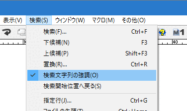
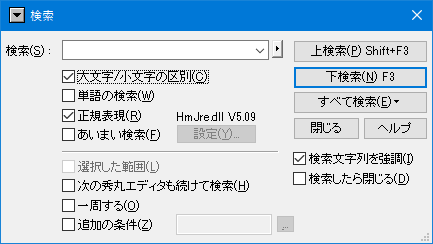

[HME0095A]
●検索した単語を全て強調表示したい

- 検索した単語を、そのテキスト（秀丸エディタウィンドウ）全体で強調表示する方法はありますか？

-
秀丸エディタVer.5.00より、検索文字列を強調表示することが可能になりました。
「検索」メニューから「検索文字列の強調」を選択

検索ダイアログで「検索文字列を強調」をチェック

ツールバーに「検索文字列を強調」追加すれば、ツールバーで on/off 可能

ちなみに、「検索文字列の強調」も強調表示の一種であるため、改行を含む場合は強調表示されません。以下を参照してください。
- hidesoft.2:20700
- 秀丸エディタヘルプの強調表示文字列のプロパティ
「検索文字列の強調」が有効になっている場合、[ESC]キーを押すと、強調表示が解除されます。
「検索」の「すべて検索 - 色付け 」を使う方法もあります。詳細は、「第II部〜知っていると便利な秀丸の機能 検索」を参照。